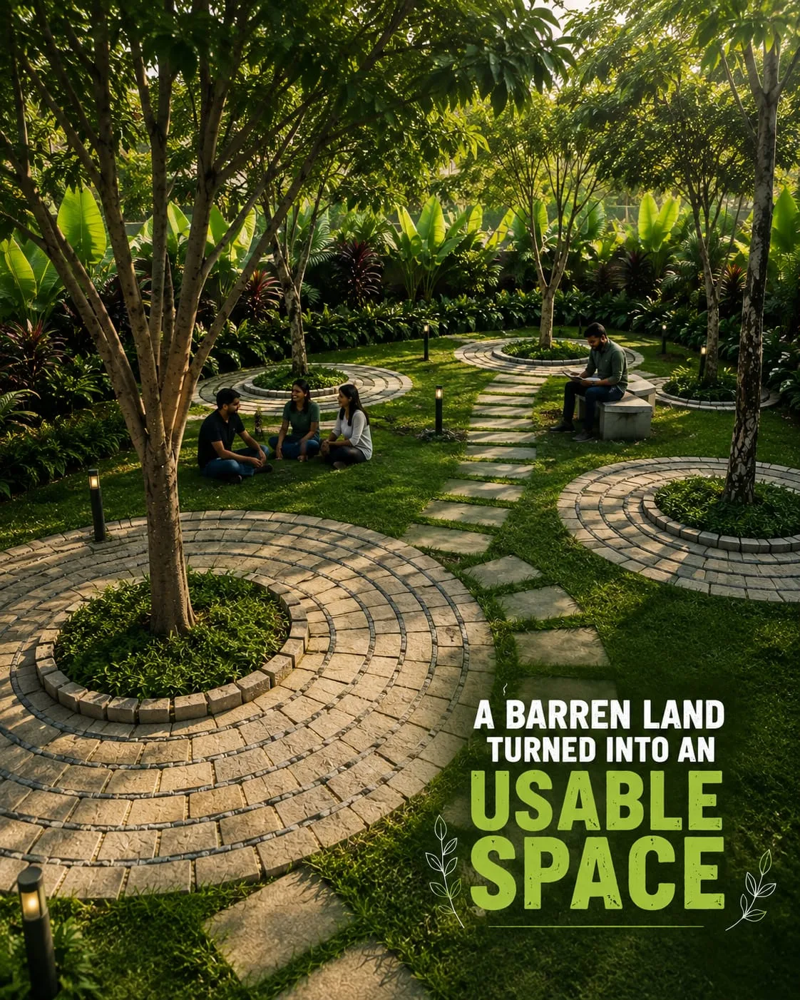
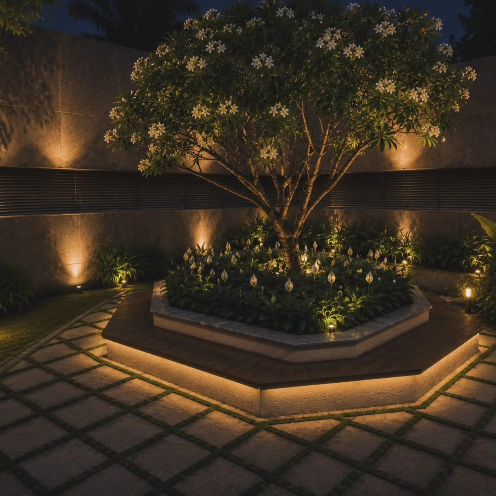
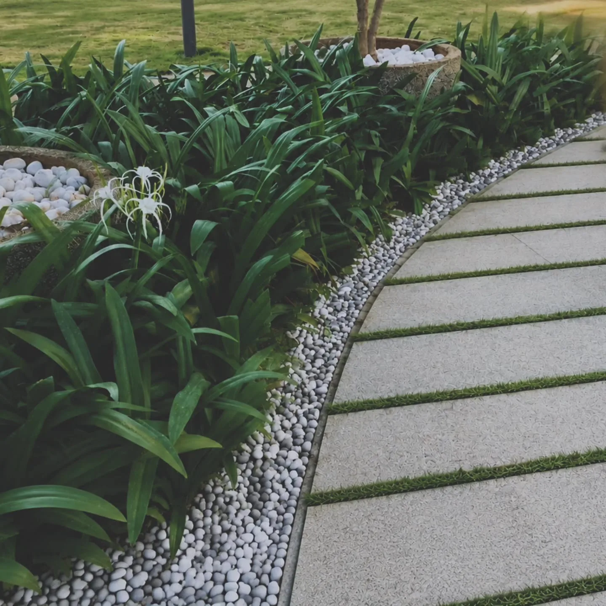
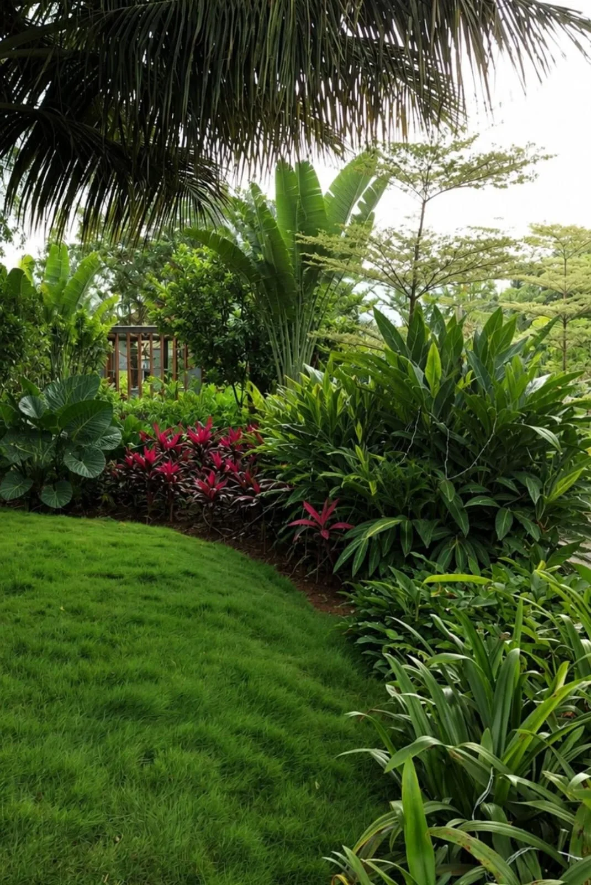

Layered planting & outdoor living
A calm central garden shaped around movement, shade and everyday use.
Landscape, planting and outdoor-space studies shaped around movement, comfort, ecology and everyday life.
Explore the Work ↓A GROWING PORTFOLIO
Planting, circulation, material, shade and light brought together with purpose.
A calm central garden shaped around movement, shade and everyday use.

Useful planting that makes landscape part of everyday experience.

Comfortable routes and places to pause, meet and spend time outdoors.

Lighting and planting extending the atmosphere of the landscape into the evening.

Edges, texture and planting working together to guide movement.

A dense planting composition built around depth, habitat and seasonal character.

Clear circulation and planted edges that soften a working environment.
HAVE A SPACE IN MIND?
Share your site, brief or idea. We can help shape the landscape, architecture and sustainability strategy around it.
Discuss a Project ↗